Overview
We used the Model-View-Controller design pattern when structuring our code. This approach separated different aspects of the game, allowing us to use modularity. The models included game objects, so for our project the two models were arrows and buttons. Views display the models to the player, so we had draw methods for each of these models. In our project, we only had one view since we always drew models to the same screen and just varied the position. The controllers updated the game state. We had a controller for each screen and each controller determined which models appeared on each screen, where they were drawn, and how the player could interact with them. In the following sections, we will explain these aspects of our code.
Models
Our game had two models: Button and Arrow.
Button Model
The button model was used to add interactive buttons to the game. On some screens, players have the option to navigate between different options, and each option is a button. For example, on the menu screen, players select the game type, so each game type is a button. In the class, for this model, there are attributes for the font, text, and text size. Additionally, when a player hovers over a button, it is highlighted.
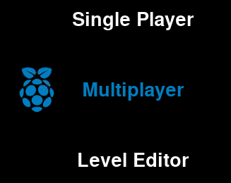We have additional attributes that store whether the button is highlighted. The methods setHighlighted and setSelected updated these attributes. In this class, we also had a draw method, which we will discuss in the Views section. Lastly, we had an updateText method that changed the text of a button. This method was only used on one screen, but we still included it as a method to follow our modular design principle.
Arrow Model
The arrow model was used to add stationary and moving arrows to the game. Each arrow had several attributes; we highlight the essential ones below.
- Position - x and y coordinates of the arrow on the screen
- Speed/Approach Rate - how fast the arrow moves down the screen
- Direction - orientation of the arrow (left, right, up, down)
- Note Time - absolute time when the arrow should be pressed
Controllers
We had seven controllers in our game.
- Input Controller
- Menu Controller
- Select Controller
- Difficulty Controller
- Game Controller
- Done Controller
- Edit Controller
Input Controller
The input controller handled detecting user inputs, which were mainly the pressure pad inputs. The class had attributes for all four directions (left, right, up, down). The type of each attribute was a boolean, so it was True when the input was pressed, and False otherwise. We also implemented software-side debouncing. To do this, we had attributes that stored the current and previous value for each direction. For example, for the left arrow input, we had two attributes: prev_left and curr_left. We defined functions that checked if any input pad was pressed (4 total). These functions checked if the current attribute is True and the previous attribute is False. It both conditions were True, then the input was pressed. We had more functions that used similar logic to check if inputs were released. This class also contained a lightButton method which used a PWM signal to light up the LEDs on the side of the dance pad.
Menu Controller
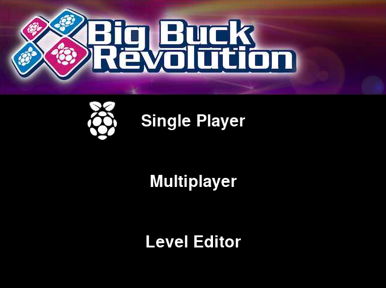The Menu Controller handled updating the main menu screen based on user inputs. It had three buttons, 'Single Player', 'Multiplayer', and 'Level Editor'. When the player selected one of those options, this controller updated its exitCode attribute. We used this same convention in all our controllers to transition between screens. The controller would set the attribute based on the button that was selected and then the top level script (game.py which we will discuss later) transitioned to the next screen based on the attribute's value.
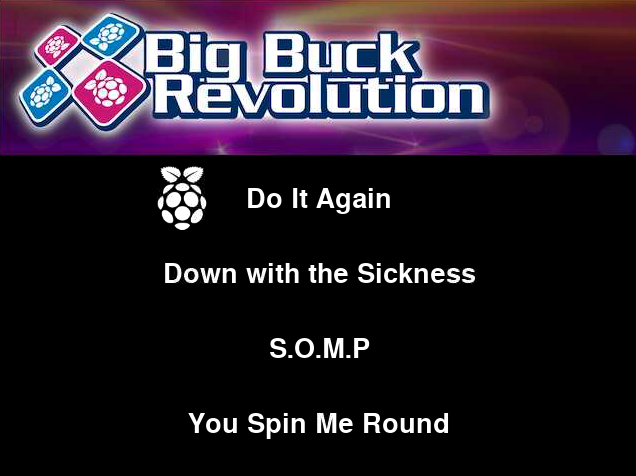Select Controller
The Select Controller handled the song selector screen. On this screen, all of the possible songs were displayed, and the user had to select one of them. This controller was very similar to the Menu Controller, as its main functionality was updating its exitCode attribute, so that the top level script could ensure the game started with the selected song.
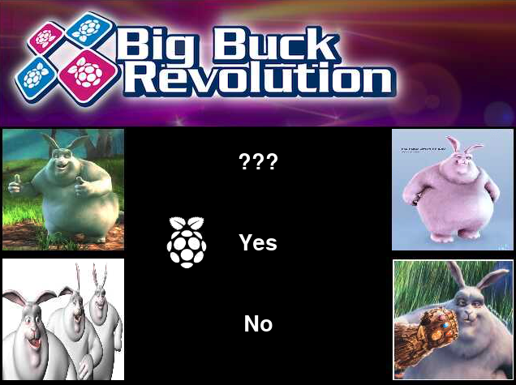Difficulty Controller
The Difficulty Controller handled the difficulty selector screen. This was also very similar to the Menu Controller and Select Controller. The main difference was that it prompted the user with a bunch of images along with a yes or no question. If the player selected yes, there would be an animation playing in the background while the game was in progress, which was the harder difficulty. If the player selected no, there would be no animation.
Game Controller
The Game Controller handled updating the main game screen. This controller was the heart of our project, since it contained the code for the actual game, and thus it was the longest file with the most logic. This controller can be broken up into two sections: game setup and gameplay.
Game Setup
The fundamental aspect of the game is that arrows move down the screen and the player has to hit the corresponding pressure pad when an arrow reaches the bottom. A major component is the timing of the arrows, since arrows reaching the bottom should correspond to beats in the song being player. We created JSON files that stored this timing information for each song. Below is an example JSON file, with a subset of arrows for space purposes.
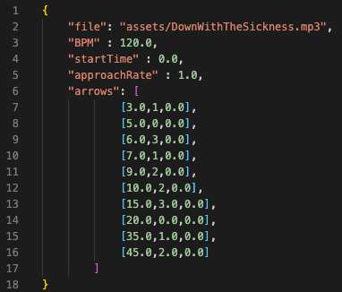The file field stores the MP3 audio file of the song. The BPM field stores the beats per minute in the song. The startTime field is the absolute time at which the first note should reach the bottom. The approachRate field is how fast the arrows in the song should move down the screen. The arrows field is a list that contains one entry (sublist) per arrow in the song. Each arrow sublist contains three values. First, it contains the time the arrow should reach the bottom, relative to startTime. Second, it contains the direction of the arrow, which is represented as a number from 0-3 (0: left, 1: down, 2: up, 3: right). Lastly, it contains the duration of the note. Currently, the game only supports arrows with duration 0 (single pressure pad tap). We analyzed each song using Audacity to determine the beat times, and then created arrows at those times.
In Game Controller, we use the parseSong function to extract all of this information from the JSON corresponding to the selected song, and save it in different attributes. During this process, we convert all the relative arrow times to absolute times, based on the start time. Next, we created our two lists of arrows: moving and stationary arrows. Our createArrows function took the parsed output and generated the list of moving arrows. This function also created the stationary arrows, which were the four arrows at the bottom. The purpose of these arrows was to specify when the user had to press one of the pressure pads. In other words, players had to hit the pressure pads when the moving arrows overlapped with the stationary arrows. In addition to the four stationary arrows that always appeared on the screen, we also had outlines of each of the four stationary arrows. These outlines were displayed when the player pressed one of the pressure pad. This provided the player with a visual confirmation that the system was properly detecting their input. This controller then started the music, started the time, and initialized the score and other game statistics that we tracked. It also determined the game background based on the difficulty.
Gameplay
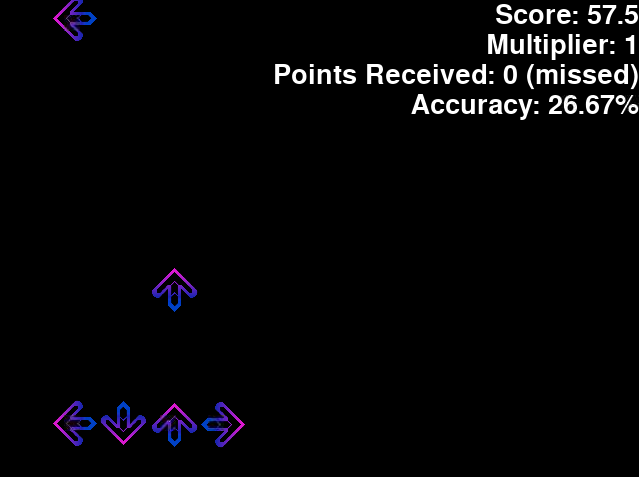 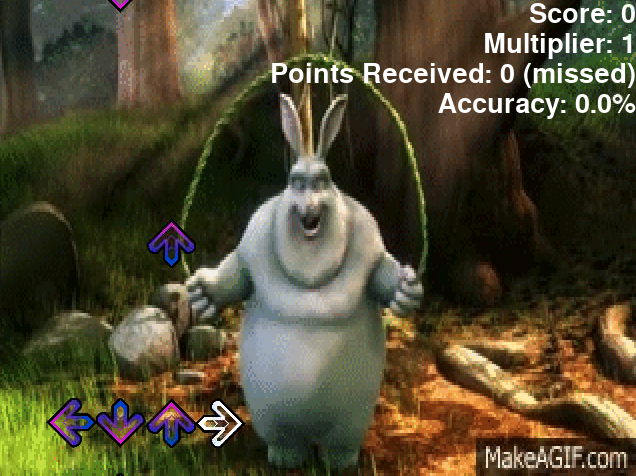Based on the user input from the Input Controller, the Game Controller checks if the player pressed the correct arrow at the right time. Our implementation finds the closest arrow about the bottom of the screen based on the pressure pad. For example, if the player presses the left pressure pad, the Game Controller will find the closest left arrow above the bottom. If that arrow is within a range off of the center of the stationary arrow, it will be classified as a hit, and the player will get the maximum number of points. If the arrow is not within the range but is within twice the range, then it will be classified as almost a hit, so the player will receive a reduced number of points. Otherwise, the player will receive no points. Based on if the arrow is classified as a hit, almost hit, or miss, the Game Controller also updates the extra statistics (total hits, total notes, points received, total score). Additionally, we implemented a multiplier. The multiplier starts at 1 and increments by 0.5 for every arrow that is a hit and increments by 0.25 for every arrow that almost hits. The player's score increment for each arrow is multiplied by the multiplier. When a player misses an arrow the multiplier is reset to 1, so players can achieve higher scores by stringing together several hits (or almost hits) in a row. Following the classification of hit/almost hit/miss, the arrow is deleted. Here are all the statistics displayed during the game.
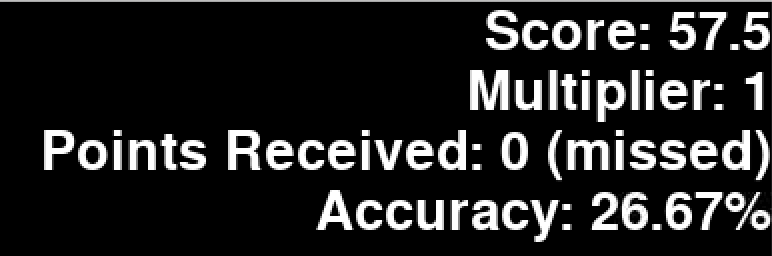At this point, the Game Controller notifies the Input Controller to display a certain color on the dance pad's LEDs. Green represents a hit, blue represents an almost hit, and red represents a miss. Lastly, the Game Controller sets its done attribute to be True after the last arrow hits the bottom, signalling the end of the game. Similar to the previous controllers, the main script, game.py constantly reads this attribute and switches to the next stage of the game accordingly.
Done Controller
The Done Controller handled the post-game screen, which displayed the player's score, showed the song's leaderboard, and allowed the player to submit their name and score to the leaderboard. We used a JSON to store all of the leaderboard data for each song, which is depicted below.
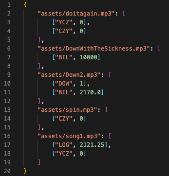The JSON stored a separate leaderboard for each song. For each song, it stored three letters as the player's name along with their score. When the game ended, the Done Controller loaded up the leaderboard for the song that the player selected and displayed all the previous scores. We used one button, which started as 'Enter Name', for allowing the player to submit their name and score to the leaderboard. The player was able to use the left and right pressure pad inputs to move between the three letters, and was able to use the up and down pressure pad inputs to cycle between letters. Below is an example leaderboard. The leaderboard gets updated right after the player submits their name, and it is automatically sorted in decreasing order.
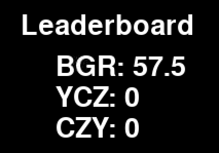Here are examples of the entire Done Controller screen before and after the players submit their name and score.
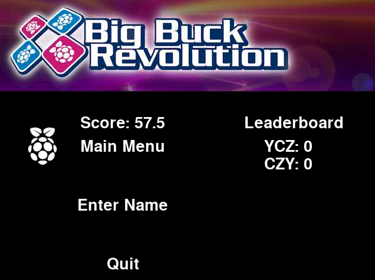
Edit Controller
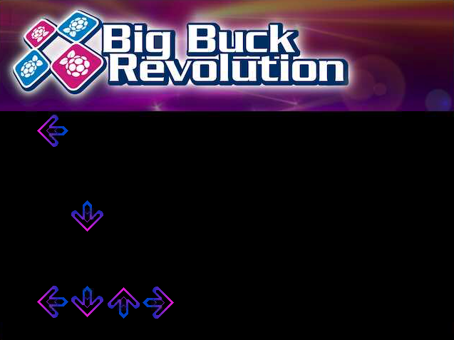The Edit Controller handled the level editor. We created some levels ourselves, but also implemented a level editor to allow the player to create levels. This controller streamed the arrows the player was inputting. Specifically, it played the song the user selected, then the user was allowed to use the pressure pads to specify arrows. The Edit Controller saved the absolute times of each of these arrows along with the direction. Once the song ended, the arrows were played back, with the song, so that the player could assess if there needed to be any changes to the level. The arrows were saved to a JSON so the player had the freedom to edit the JSON file, specifically some arrow's note times, if they felt that some times were off.
Views
Our game only had one view, since we were always drawing to the screen on the Pi or an external monitor. We had a draw method in each model. As it sounds, this method drew the model to the screen. Each controller called a model's draw method based on what needed to be displayed on the screen at a specific time. For example, on the Main Menu, there were three buttons. The draw method in the Menu Controller called the draw method for each of the three buttons it instantiated.
One optimization that we implemented was the number of arrows we drew during the game. We had one list of arrows, but it was fairly computationally expensive to constantly draw each of these arrows. Therefore, we stored the indices of the first and last arrow that we wanted to draw. We constantly updated these indices as the song progressed, but this made the code more efficient since it didn't loop through every arrow in the list.
Main Script
We have discussed the models, views, and controllers that we implemented. However, the script game.py is responsible for starting the game and coordinates the transitions between screens. First, this script initialized all seven of the controllers. Then, it ran the game until the physical quit button was pressed. This process can be modeled as a state machine. There were a total of six states:
- STATE_MENU: Main Menu
- STATE_SELECTSCREEN: Song Select
- STATE_DIFFICULTY: Difficulty (background image) select
- STATE_SINGLEPLAYER: Game running
- STATE_EDITOR: Level editor
- STATE_DONE: Game finished
Another extension that we implemented was multiplayer mode. We decided to allow the players to decide on one song. The game would start for player 1, then there would be a 10 second pause, and then the game would restart for player 2. Finally, the winner would be shown on the Done Controller's screen, and the winner would be allowed to upload their score to the leaderboard. To implement this we had to modify the transition logic between STATE_SINGLEPLAYER and STATE_DONE. STATE_SINGLEPLAYER was used to run one round of the game, and after it finished we restarted it if the players selected the multiplayer option. We chose this implementation instead of creating a separate multiplayer state since it helped keep the number of states concise and didn't introduce unncessary complexity. Lastly, we had to save both players scores and compare the two to check which player one. This was calculated by the Done Controller.
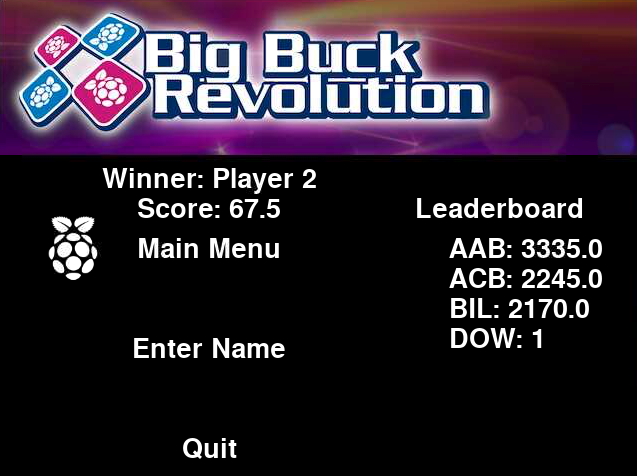